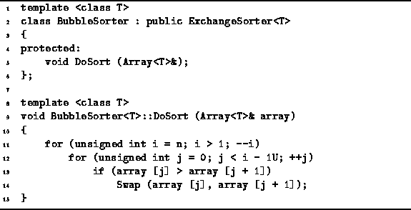
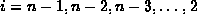
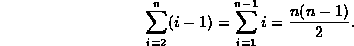
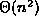

Data Structures and Algorithms
with Object-Oriented Design Patterns in C++
Data Structures and Algorithms
with Object-Oriented Design Patterns in C++
The simplest and, perhaps, the best known of the exchange sorts
is the bubble sort . Figure
Figure  shows the operation of bubble sort.
shows the operation of bubble sort.
To sort the sequence  ,
bubble sort makes n-1 passes through the data.
In each pass, adjacent elements are compared and swapped if necessary.
First,
,
bubble sort makes n-1 passes through the data.
In each pass, adjacent elements are compared and swapped if necessary.
First,  and
and  are compared;
next,
are compared;
next,  and
and  ; and so on.
; and so on.
Notice that after the first pass through the data, the largest element in the sequence has bubbled up into the last array position. In general, after k passes through the data, the last k elements of the array are correct and need not be considered any longer. In this regard the bubble sort differs from the insertion sort algorithms--the sorted subsequence of k elements is never modified (by an insertion).
Figure also shows that while n-1 passes through the data are required
to guarantee that the list is sorted in the end,
it is possible for the list to become sorted much earlier!
When no exchanges at all are made in a given pass,
then the array is sorted and no additional passes are required.
A minor algorithmic modification
would be to count the exchanges made in a pass,
and to terminate the sort when none are made.
Program defines the BubbleSorter<T> class template.
This class simply provides an implementation for the DoSort routine.
The DoSort routine takes a reference to an Array<T> instance
and sorts its elements in place.
The implementation makes use of the Swap routine
described in Section .

Program: BubbleSorter<T> Class DoSort Member Function Definition
The outer loop (lines 11-14) is done for .
That makes n-1 iterations in total.
During the  iteration of the outer loop,
exactly i-1 iterations of the inner loop are done (lines 12-14).
Therefore, the number of iterations of the inner loop,
summed over all the passes of the outer loop is
iteration of the outer loop,
exactly i-1 iterations of the inner loop are done (lines 12-14).
Therefore, the number of iterations of the inner loop,
summed over all the passes of the outer loop is

Consequently, the running time of bubble sort is .
The body of the inner loop compares adjacent array elements
and swaps them if necessary (lines 13-14).
This takes at most a constant amount of time.
Of course, the algorithm will run slightly faster when no swapping is needed.
For example, this occurs if the array is already sorted to begin with.
In the worst case,
it is necessary to swap in every iteration of the inner loop.
This occurs when the array is sorted initially in reverse order.
Since only adjacent elements are swapped,
bubble sort removes inversions one at time.
Therefore, the average number of swaps required is  .
Nevertheless, the running time of bubble sort is always .
.
Nevertheless, the running time of bubble sort is always .
 Copyright © 1997 by Bruno R. Preiss, P.Eng. All rights reserved.
Copyright © 1997 by Bruno R. Preiss, P.Eng. All rights reserved.